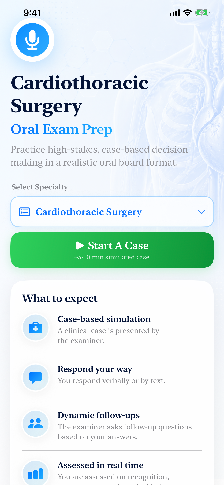
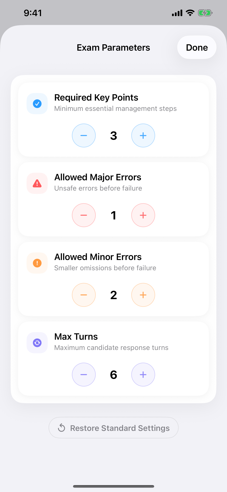

Case-based simulation
Start from a clinical prompt and work through management decisions under oral-board style pressure.
AI oral board practice for surgeons
Practice high-stakes, case-based decision making in a realistic oral board format with dynamic examiner follow-ups, voice or text responses, and structured case debriefs.

Built for rehearsal
Start from a clinical prompt and work through management decisions under oral-board style pressure.
The examiner adapts to your answers, asking the next question based on what you covered.
Practice out loud when you want realism, or type when you need quiet focused reps.
Review covered, partial, and missed elements so every case turns into a targeted study plan.
How it works
Oral Boards AI keeps the interface calm so candidates can concentrate on clinical judgment, prioritization, and verbal organization.
Inside the app

Ready for better reps?